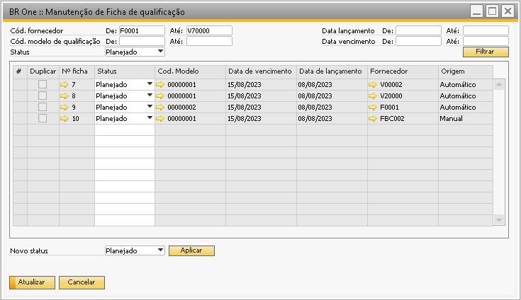
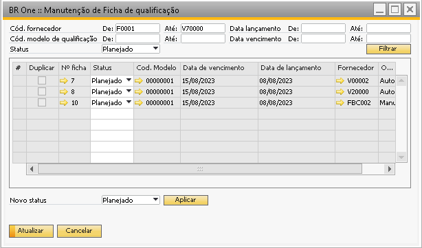
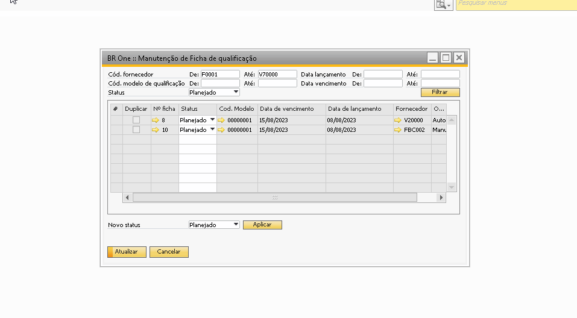

Manutenção de Ficha de qualificação
Esta janela é um utilitário para facilitar a troca de status das fichas de qualificação.
Para acessar a tela de Manutenção de Ficha de qualificação, é necessatio ir ao menu:
Qualidade -> Manutenção -> Manutenção de Ficha de qualificação

O cabeçalho desta tela consiste em filtros de busca. Após ter preenchido os filtros desejados, basta pressionar o botão Filtrar. As linhas são os resultados do filtro.
Logo abaixo das linhas, existem o campo:
Novo status
Esse campo serve para alterar as informações de todas as linhas em tela e não das fichas, por exemplo, ao inserir no campo Novo status o valor Fechado e clicar no botão Aplicar, todas as linhas serão alteradas para o status Fechado.
{kind=link}
As alterações podem ser feitas em lote como explicado acima ou individualmente, linha a linha, alterando o status para cada ficha.
{kind=link}
Não é possível fechar uma Ficha caso os critérios manuais e automáticos estejam com o valor vazio. Caso tente fechar uma ficha com critérios manuais e automáticos sem valor, será exibida a seguinte mensagem de erro conforme a simulação abaixo:
Não é permitido fechar a ficha se houver linha(s) com o campo Valor encontrado vazio(s) nas abas de critérios.
{kind=link}
Depois que as alterações desejadas forem realizadas, basta pressionar o botão Atualizar para salvar. Após realizar todas as operações, será exibido um log com os resultados onde mostrará as linhas que tiveram sucesso e as linhas que tiveram erro na atualização.

Através da manutenção é possível realizar a duplicação em lote das fichas que estiverem com o status fechado.
Ao filtrar as fichar com status fechado a coluna Duplicar fica habilitada para seleção.

Não é permitido selecionar linhas que já possuem ficha em aberto, ou seja, o fornecedor selecionado não pode ter ficha com status planejado ou liberado. Também não é permitido selecionar mais de uma linha para o mesmo fornecedor.
Lembrando que ao Duplicar, o sistema olhará o parâmetro Duplicar valores de Critérios manuais

Onde:
Quando marcado, ao duplicar a ficha de qualificação os valores de critérios manuais serão levados para nova ficha de qualificação.
Quando desmarcado, ao duplicar a ficha de qualificação os valores de critérios manuais não serão levados para nova ficha de qualificação.